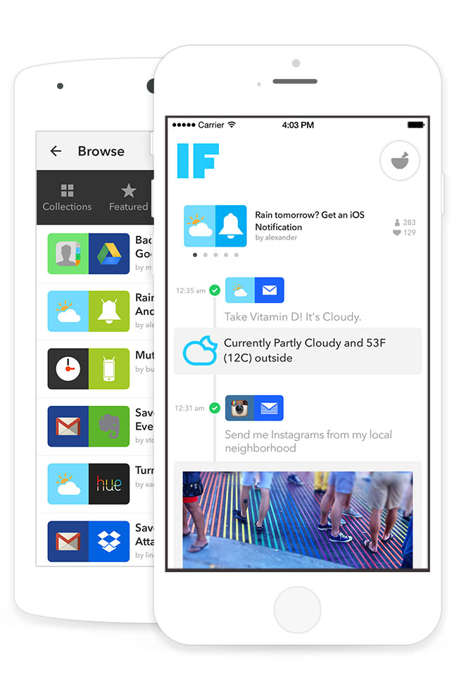

Heroku App Provides Do-It-Yourself Tools to Create New Uses for Everyday Technology
IFTTT enables consumers creative control over their devices and apps
“If this…then that…” A powerful statement of cause and effect, it is a universal truth behind so much of our world. It’s also a fundamental concept in computer programming that, like a recipe, produces a desired result with a line of code. When it comes to everyday technology, we often wish for more direct control over our devices and apps. We see how simple connections between them could produce empowering results. For example, we may want our house lights to turn on when we are coming home, or get a text message if it’s going to rain. Since most of us don’t write code, customizing our digital experience in that way seems impossible. If we want to get “that,” then how do we do “this”?
The founders of IFTTT wanted to give consumers creative control over the products and apps that they love. Their vision was to empower consumers to build simple connections between devices and apps that manifested new ways these technologies could add value to their lives. And they wanted it to be as easy as following a recipe.
Introducing IF and DO
The company launched their first product “IF” based on the “if…then…” formula. Users create and run “Recipes” that use APIs to connect apps or smart devices together to produce a new result. Recipes allow users to accomplish such micro-tasks as share content seamlessly between apps, control inter-connected devices, or receive notifications of important events. “IF” automates Recipes and runs them in the background. Recently the company released a new product called “DO” that provides manual control by attaching Recipes to a button. Users can assign Recipes that control devices, send photos, or save and share notes with the tap of a button, allowing them to accomplish their desired task on demand.

DIY Recipes Running on Heroku
Since its inception in late 2010, IFTTT has been using Heroku to develop, launch, and run their platform and product portfolio. In the beginning, they chose Heroku due to its reputation and design – the platform’s ease of use and flexibility matched their needs as the company has grown. The IFTTT team has changed how they’ve used the platform over time as their business has evolved, and Heroku has allowed them to easily ramp up or down as needed.
As we’ve grown, Heroku has scaled right along with us. It simply works.
Devin Foley, Head of Engineering, IFTTT
The development team built their apps using Ruby on Rails, Node.js and Express.js, as well as Go. For their database, they chose Heroku Postgres and use Desk.com to help them manage customer support cases. They love the variety of Heroku Add-ons that help them extend the platform with tools and services that help them deploy and manage their apps faster and easier. They use RedisGreen servers, New Relic APM for monitoring and troubleshooting, Librato for performance monitoring and analysis, and MemCachier for a high-performance memcache-as-a-service. The team manages user-generated Recipes in a custom-built backend system.
The Heroku platform itself is incredible. The logging and metrics are just what we need, without overcomplicating things.
Devin Foley, Head of Engineering, IFTTT
App Experience
Users can start creating and activating Recipes in minutes. After logging in to the IFTTT platform on either a desktop or mobile device, the user is presented with an exceptionally simple and cheerfully visual interface that walks them through adding a micro-task Recipe or creating their own.
When creating a Recipe, users are first presented with a selection of “Channels,” which are apps, devices, or services supported by IFTTT (such as Facebook, Evernote, Nest Thermostat, Fitbit, etc.). Channels are supported on IFTTT through APIs that allow connectivity to the Channel’s data or functionality. For developers interested in building a new Channel directly on the IFTTT platform, the company supports them with their own API.

To create a Recipe, users select a “Trigger Channel” (the “if” statement) and then an “Action Channel” (the “then” statement). For example, “if I post a photo to Instagram” (trigger app: Instagram), “then save a copy to Dropbox” (action app: Dropbox). Thus combined, these two technologies together can offer a powerful new tool for managing life online and offline.
A major aspect of the IFTTT experience is the community of users who build and share their Recipes. Users can view a contributor’s profile and see all the Recipes they’ve posted, how many likes and downloads for each Recipe, as well as the creator’s personal Channels and favorites. The most popular Recipe creators of the month get a “top chef” designation. IFTTT Recipe Collections offer a mind-boggling number of user-generated Recipes that offer limitless ways to extend your devices and apps.
The company reports that as of April 2015, over 180 Channels are available on IFTTT. Over 20 million Recipes have been created so far and are running more than 600 million times per month.
If…there are so many Recipes to choose from, then…our possibilities are limitless.
More Stories


Have a question? Give our sales team a call: +1 (866) 278-1349.